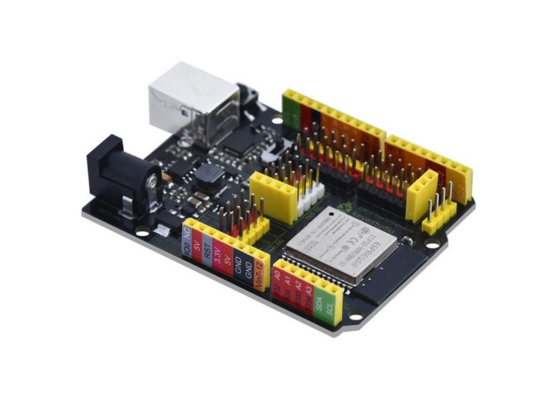
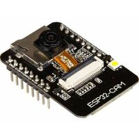
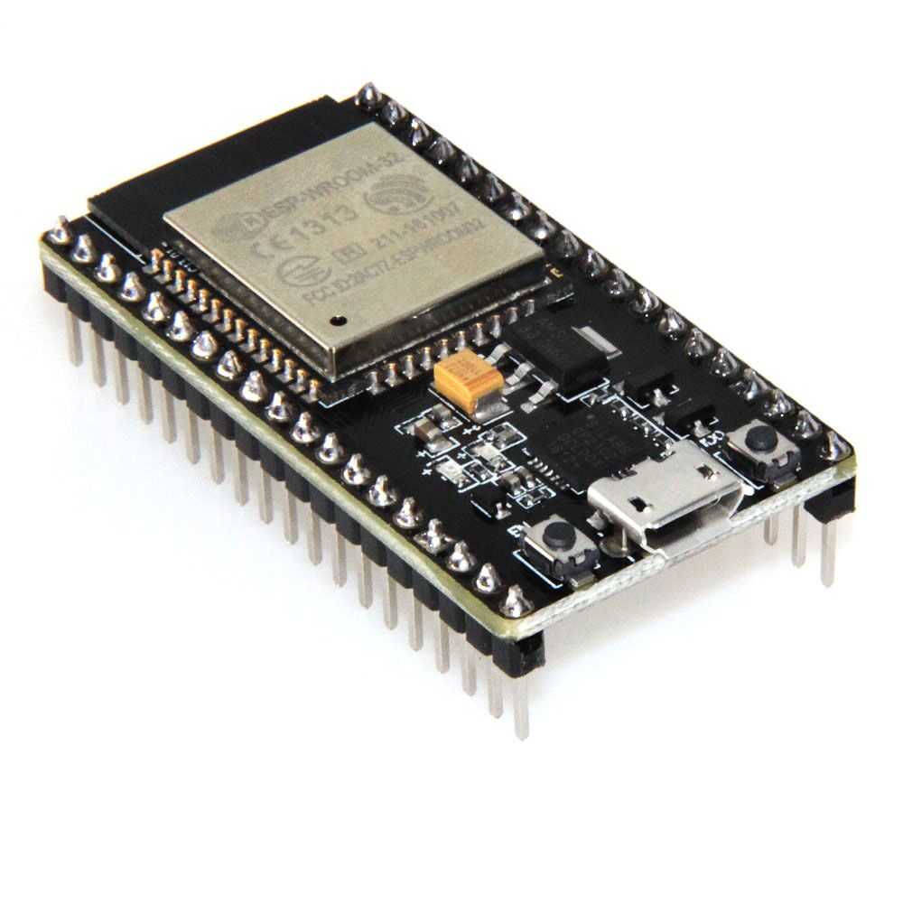
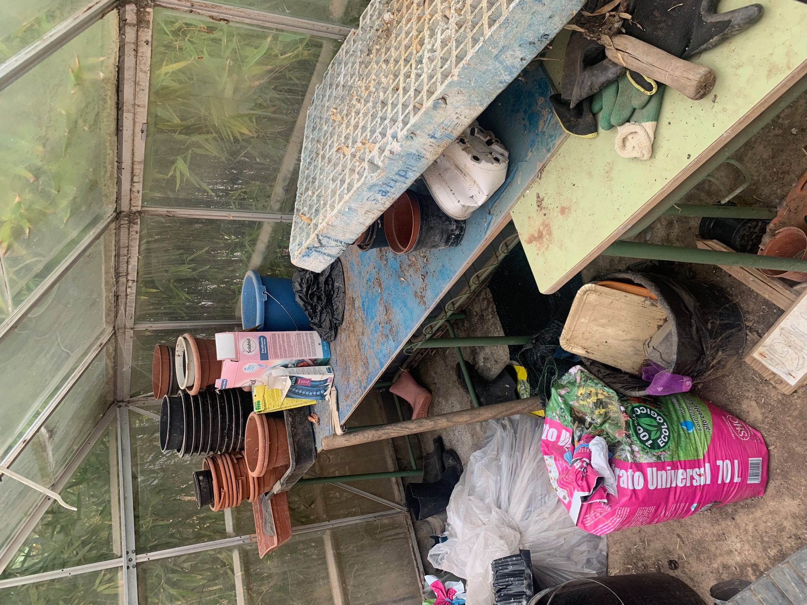
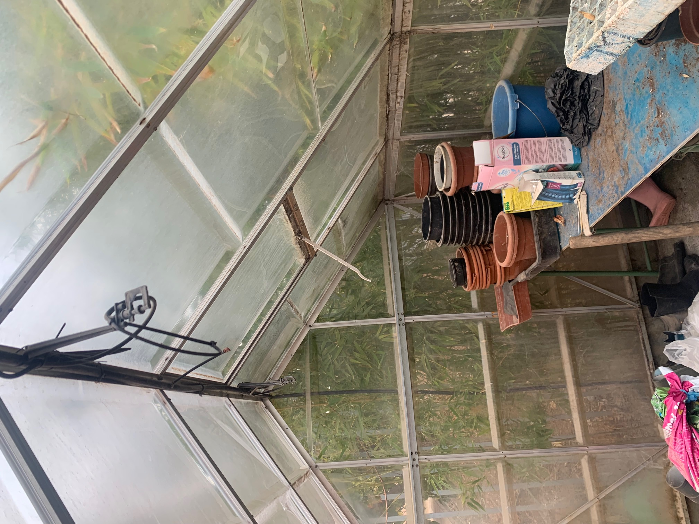
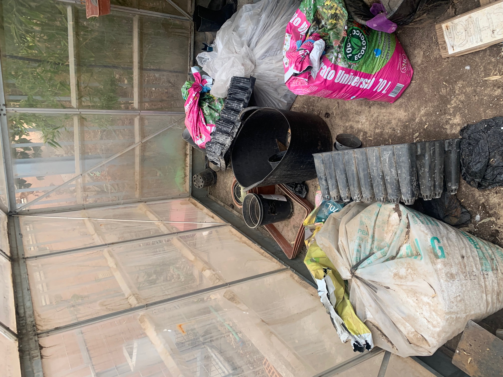

Descripción de proyecto del Invernadero Escolar
El invernadero escolar es una herramienta educativa muy valorada por los docentes porque fomenta la importancia del medio ambiente, la agricultura sostenible, la optimización de recursos naturales, y desde el punto de vista metodológico, es un centro de interés que permite desarrollar infinidad de situaciones de aprendizaje fomentando el trabajo en equipo y colaborativo.
Este documento pretende ser una guía para la automatización del los procesos internos que se pueden controlar mediante medios automáticos a través de captadores y de actuadores. Estas mismas técnicas se podrían aplicar para automatizar un aula o una vivienda.
Este proyecto presenta varias fases. En primer lugar, la puesta a punto de la instalación tras el abandono sufrido durante años. Después estudio de los tipos de automatismos que se pueden instalar en el invernadero contando con los medios disponibles. Posteriormente, integración de todos los dispositivos y sensores en una aplicación de control basada en esp32. Finalmente, control desde un móvil y/o aplicación web de los elementos de control del invernadero y su integración en otras redes de información.
El trabajo se desarrollará empleando placas ESP32 de varios tipos con conectividad Wifi a Andared_IoT, y estudiaremos la posibilidad de añadir algún módulo LORA para compartir información con una red de control y seguimiento de parámetros ambientales. Las placas estarán controladas por bots de Telegram que será el que envíe las órdenes ejecutivas al margen de los propios procesos de control automático que se programen. Estas son las tarjetas que emplearemos para el control de los automatismos y de la gestión de la información.
|  |  |  |
Al finalizar este proyecto podremos realizar las siguientes acciones:
1. Adecentar el invernadero y plantar algunas semillas de germinación rápida
2. Riego y control de apertura de la ventana de techo automático en función de las temperaturas exterior e interior.
3. Control remoto de la ventana, luz y riego del invernadero.
4. Lectura en tiempo real de los datos de: Temperatura interior y exterior del invernadero, presión barométrica, humedad relativa interior y exterior, humedad de suelo de las dos bateas principales, foto del interior del invernadero y parámetros ambientas leídos de la estación EducaCon (Monóxido de Carbono, Dióxido de Nitrógeno, Partículas en el aire, ...)
5. Conexión con la estación meteorológica para lectura de datos pluviométricos y viento (cierre de ventana de techo si el viento supera una determinada velocidad)
6. Grabación de datos en una base de datos para tener un histórico de la información registrada
7. Trabajo en equipo con otros departamentos para la explotación didáctica del invernadero.
8. Rúbrica final de los objetivos conseguidos y los que quedarían para una segunda fase.
El punto de partida es el que se muestra en las siguientes imágenes.
|  |  |  |